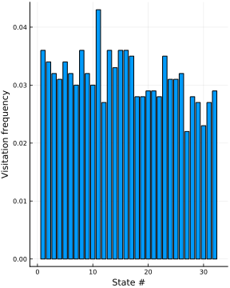

Binning schemes
Currently, there are four types of rectangular partition schemes available, controlled by the parameter ϵ:
ϵ::Intdivides each axis intoϵintervals of the same size.ϵ::Floatdivides each axis into intervals of sizeϵ.ϵ::Vector{Int}divides the i-th axis intoϵᵢintervals of the same size.ϵ::Vector{Float64}divides the i-th axis into intervals of sizeϵᵢ.
There are two ways of representing a binning: either by encoding each bin by integers (see Coordinate representation), or by referencing them by the bin origin coordinates (see Integer encoding representation).
Visualizing partitions
To visualize how the different partition schemes work, you can feed the plot_partition a binning scheme ϵ along with a three-dimensional set of points. Of course, the partitions also work for data of any dimension.
julia> using StateSpaceReconstruction, Plots
julia> pgfplots()
ERROR: ArgumentError: Package PGFPlots not found in current path:
- Run `import Pkg; Pkg.add("PGFPlots")` to install the PGFPlots package.julia> A = rand(3, 100)
3×100 Array{Float64,2}:
0.547443 0.934324 0.592589 0.948677 … 0.315489 0.126299 0.920641
0.0610654 0.920712 0.133595 0.614187 0.983562 0.786161 0.577239
0.34109 0.387843 0.63334 0.0808731 0.880523 0.211122 0.996787Rectangular partition constructed by dividing the i-th axis interval into an integer number, ϵᵢ, of equal-length intervals.
julia> ϵ = [1, 2, 3]
3-element Array{Int64,1}:
1
2
3
julia> plot_partition(A, ϵ);
ERROR: UndefVarError: plot_partition not defined
Rectangular partition constructed by dividing the i-th axis into intervals of length ϵᵢ.
julia> ϵ = [0.1, 0.3, 0.5]
3-element Array{Float64,1}:
0.1
0.3
0.5
julia> plot_partition(A, ϵ);
ERROR: UndefVarError: plot_partition not defined
Rectangular partition constructed by dividing all axes into intervals of length ϵ.
julia> ϵ = 0.3
0.3
julia> plot_partition(A, ϵ);
ERROR: UndefVarError: plot_partition not definedRectangular bins, divide all axes into ϵ equal-length intervals.
julia> ϵ = 8
8
julia> plot_partition(A, ϵ);
ERROR: UndefVarError: plot_partition not definedVisualizing partitions of embeddings
The same works with embeddings.
julia> A = rand(3, 100)
3×100 Array{Float64,2}:
0.371348 0.95776 0.00117997 0.389166 … 0.734942 0.0875567 0.714106
0.336133 0.0507382 0.859468 0.438539 0.0133088 0.863053 0.231224
0.308778 0.616108 0.259072 0.344202 0.166639 0.201223 0.659731
julia> E = embed(A, [1, 2, 3], [1, 0, -5])
ERROR: UndefVarError: embed not definedRectangular partition constructed by dividing the i-th axis of the embedding interval into an integer number, ϵᵢ, of equal-length intervals.
julia> ϵ = [1, 2, 3]
3-element Array{Int64,1}:
1
2
3
julia> plot_partition(A, ϵ);
ERROR: UndefVarError: plot_partition not definedRectangular partition constructed by dividing the i-th axis of the embedding into intervals of length ϵᵢ.
julia> ϵ = [0.1, 0.3, 0.5]
3-element Array{Float64,1}:
0.1
0.3
0.5
julia> plot_partition(A, ϵ);
ERROR: UndefVarError: plot_partition not definedRectangular partition constructed by dividing all axes of the embedding into intervals of length ϵ.
julia> ϵ = 0.3
0.3
julia> plot_partition(A, ϵ);
ERROR: UndefVarError: plot_partition not definedRectangular bins, divide all axes of the embedding into ϵ equal-length intervals.
julia> ϵ = 8
8
julia> plot_partition(A, ϵ);
ERROR: UndefVarError: plot_partition not definedCustomizing visualizations
plot_partition